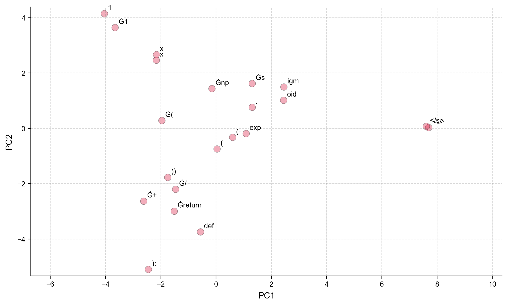

Remark
These lecture notes are in early access and will continue to evolve based on classroom experience and feedback.
4.6. Tokenization Across Models: A Comparative Study#
4.6.1. Learning objectives#
By the end of this section, you should be able to:
Compare tokenization behavior across at least four model families on identical inputs.
Explain how WordPiece, BPE, and SentencePiece algorithms differ in handling formal text, informal slang, emoji, and code/math notation.
Interpret a token count comparison chart and connect token efficiency to context window utilization and inference cost.
Analyze the 2D PCA projection of token embeddings and identify structural patterns in the embedding geometry.
Connect tokenizer design choices to downstream generation quality differences.
Section Goal
This section brings together the tokenization concepts of the previous section and applies them comparatively across five model families on carefully chosen stress-test inputs. You will visualize how different tokenizers segment the same text, compute efficiency metrics, and project token embeddings into 2D to explore the geometry of the representation space. By the end, you will understand concretely how tokenizer choice affects context window utilization, API cost, and model behavior on non-standard input types.
4.6.2. Why Cross-Model Tokenizer Comparison Matters#
Choosing a tokenizer — and by extension a model — is not a neutral decision. The same sentence can become 6 tokens under one scheme and 14 under another. A single emoji can be handled as a single semantic unit or explode into 8 byte-level fragments. These differences are not cosmetic: they directly affect context window utilization, model accuracy on edge-case inputs, inference cost, and the geometric structure of the embedding space.
The three comparisons that follow explore tokenization behavior systematically across five sentence types that stress-test each algorithm’s vocabulary coverage and efficiency.
4.6.3. Five Sentence Types for Stress Testing#
A thorough comparison examines tokenizer behavior on inputs that reveal algorithmic differences rather than inputs where all tokenizers behave similarly:
Sentence Type |
Example |
What it tests |
|---|---|---|
Formal academic |
“The neural network optimizer converged after 50 epochs.” |
Baseline efficiency, scientific vocabulary |
Informal/slang |
“omg this model is lowkey goated ngl fr fr lol 🔥” |
OOV handling, emoji, internet language |
Mathematical notation |
“The loss function is L(θ) = −∑ᵢ yᵢ log(p̂ᵢ)” |
Unicode symbols, subscript characters |
Python code |
“def sigmoid(x): return 1/(1+np.exp(-x))” |
Code tokens, operators, identifiers |
Non-English |
“Das Modell wurde auf deutschen Texten trainiert.” |
Multilingual coverage |
4.6.4. Comparison 1: WordPiece vs. BPE vs. SentencePiece#
The code below compares BERT (WordPiece), GPT-2 (BPE), and Flan-T5 (SentencePiece) on all five sentence types.
Warning: You are sending unauthenticated requests to the HF Hub. Please set a HF_TOKEN to enable higher rate limits and faster downloads.
'The neural network optimizer converged after 50 epochs.'
BERT : 13 tokens — ['the', 'neural', 'network', 'opt', '##imi', '##zer', 'converge', '##d']...
GPT-2 : 12 tokens — ['The', 'Ġneural', 'Ġnetwork', 'Ġoptim', 'izer', 'Ġconver', 'ged', 'Ġafter']...
Flan-T5 : 16 tokens — ['▁The', '▁neural', '▁network', '▁optimize', 'r', '▁', 'converge', 'd']...
'omg this model is lowkey goated ngl fr fr lol 🔥'
BERT : 16 tokens — ['om', '##g', 'this', 'model', 'is', 'low', '##key', 'goat']...
GPT-2 : 17 tokens — ['om', 'g', 'Ġthis', 'Ġmodel', 'Ġis', 'Ġlow', 'key', 'Ġgo']...
Flan-T5 : 19 tokens — ['▁', 'o', 'm', 'g', '▁this', '▁model', '▁is', '▁low']...
'The loss function is L(θ) = −∑ᵢ yᵢ log(p̂ᵢ)'
BERT : 17 tokens — ['the', 'loss', 'function', 'is', 'l', '(', 'θ', ')']...
GPT-2 : 26 tokens — ['The', 'Ġloss', 'Ġfunction', 'Ġis', 'ĠL', '(', 'Î', '¸']...
Flan-T5 : 21 tokens — ['▁The', '▁loss', '▁function', '▁is', '▁L', '(', 'θ', ')']...
'def sigmoid(x): return 1/(1+np.exp(-x))'
BERT : 23 tokens — ['def', 'si', '##gm', '##oid', '(', 'x', ')', ':']...
GPT-2 : 18 tokens — ['def', 'Ġs', 'igm', 'oid', '(', 'x', '):', 'Ġreturn']...
Flan-T5 : 26 tokens — ['▁de', 'f', '▁', 'sig', 'moi', 'd', '(', 'x']...
'Das Modell wurde auf deutschen Texten trainiert.'
BERT : 14 tokens — ['das', 'model', '##l', 'wu', '##rde', 'auf', 'deutsche', '##n']...
GPT-2 : 19 tokens — ['D', 'as', 'ĠMod', 'ell', 'Ġw', 'urd', 'e', 'Ġa']...
Flan-T5 : 11 tokens — ['▁Das', '▁Modell', '▁wurde', '▁auf', '▁', 'deutschen', '▁Text', 'en']...
Typical observations across sentence types:
Formal academic text: All three tokenizers handle common English words efficiently. BERT lowercases everything; GPT-2 and Flan-T5 preserve case. Scientific terms like “optimizer” and “converged” may be split differently: BERT may produce ["optim", "##izer"] while GPT-2 produces ["Ġoptim", "izer"].
Informal/slang: Neologisms like “lowkey” and “goated” are handled very differently. BERT produces [UNK] for the emoji (🔥). GPT-2 fragments the emoji into 4 byte tokens. Flan-T5 represents it as a single token if it appears in the vocabulary.
Mathematical notation: BERT produces [UNK] for Greek letters (θ, ∑) and other Unicode mathematical symbols. GPT-2 represents them as byte sequences. Flan-T5 may handle some common mathematical characters as direct vocabulary entries.
Python code: All three tokenizers fragment code differently. Operator sequences (1/(1+) may become many single-character tokens under word-level models but merge into multi-character tokens under byte-level BPE.
4.6.5. Comparison 2: BERT vs. RoBERTa — Architecture Siblings, Different Tokenizers#
This comparison focuses deliberately on BERT and RoBERTa, which share nearly identical model architectures (both are bidirectional transformers with masked language modeling pre-training) but use fundamentally different tokenization algorithms.
This comparison isolates the tokenizer as the controlled variable — how much does the tokenization algorithm change what the model can process, even when the architecture is the same?
The most revealing contrast is on the emoji sentence:
4.6.6. Comparison 2: BERT vs. RoBERTa — Architecture Siblings, Different Tokenizers#
This comparison focuses deliberately on BERT and RoBERTa, which share nearly identical model architectures (both are bidirectional transformers with masked language modeling pre-training) but use fundamentally different tokenization algorithms.
This comparison isolates the tokenizer as the controlled variable — how much does the tokenization algorithm change what the model can process, even when the architecture is the same?
The most revealing contrast is on the emoji sentence. Examine the output carefully: BERT collapses unknown characters into a single [UNK] token, while RoBERTa’s byte-level BPE preserves every character — at the cost of fragmentation.
BERT: ['i', 'love', 'this', '!', '[UNK]', 'it', "'", 's', 'absolutely', 'amazing', '[UNK]']
RoBERTa: ['I', 'Ġlove', 'Ġthis', '!', 'ĠðŁĺ', 'į', 'ĠIt', "'s", 'Ġabsolutely', 'Ġamazing', 'ĠðŁ', 'İ', 'ī', 'ðŁ', 'Ķ', '¥']
BERT collapses every emoji to [UNK] — three emotionally significant tokens become three identical meaningless tokens. RoBERTa never emits [UNK] but fragments each emoji into 3–6 byte-level tokens, each carrying statistical byte co-occurrence information rather than semantic meaning.
For downstream tasks where emoji carry sentiment signal (social media analysis, product reviews), this difference in tokenization strategy directly affects model performance even before any training occurs.
4.6.7. Comparison 3: Modern Production Tokenizers#
This comparison examines three contemporary production tokenizers: RoBERTa (byte-level BPE), Phi-3 Mini (reasoning-optimized large-vocabulary BPE), and Flan-T5 (multilingual SentencePiece).
Property |
RoBERTa |
Phi-3 Mini |
Flan-T5 |
|---|---|---|---|
Algorithm |
Byte-level BPE |
Large-vocab BPE |
Unigram LM |
Vocabulary size |
50,265 |
32,064 |
32,100 |
UNK handling |
Byte fallback |
Byte fallback |
|
Code/math tuning |
No |
Yes (explicit) |
No |
Multilingual |
Partial |
Partial |
Yes |
Phi-3’s tokenizer was explicitly optimized for reasoning and instruction-following tasks, with code, mathematical notation, and structured text (JSON, tables) as first-class merge targets. This results in fewer, more semantically coherent splits for technical content compared to RoBERTa’s general-purpose training.
4.6.8. Embedding Geometry from Tokenization#
Beyond the token count, tokenization choices affect the geometric structure of the embedding space. Visualizing this geometry reveals patterns invisible in raw token lists.
The code below:
Loads a pre-trained RoBERTa model and tokenizes a Python function definition.
Extracts the last hidden state — the contextual embedding vector for each token position.
Projects the high-dimensional vectors (768-dim) to 2D using PCA and annotates each point with its token string.
Key Term — Contextual Embeddings
Unlike static word embeddings (e.g., Word2Vec), contextual embeddings assign a different vector to each token depending on its surrounding context. The word “bank” receives a different embedding in “river bank” than in “bank account” because the encoder attends to all other tokens when computing each representation. In transformer models, the last hidden state is the output of the final encoder layer — a matrix of shape (sequence_length, hidden_size) where each row is the contextual embedding for one token position.
[transformers] RobertaModel LOAD REPORT from: roberta-base
Key | Status |
--------------------------+------------+-
lm_head.dense.weight | UNEXPECTED |
lm_head.dense.bias | UNEXPECTED |
lm_head.layer_norm.weight | UNEXPECTED |
lm_head.layer_norm.bias | UNEXPECTED |
lm_head.bias | UNEXPECTED |
pooler.dense.weight | MISSING |
pooler.dense.bias | MISSING |
Notes:
- UNEXPECTED: can be ignored when loading from different task/architecture; not ok if you expect identical arch.
- MISSING: those params were newly initialized because missing from the checkpoint. Consider training on your downstream task.
{kind=link}

Fig. 4.1 Token Embedding PCA: ‘def sigmoid(x): return 1 / (1 + np.exp(-x))’#
In the 2D projection, structurally related tokens often cluster: Python keywords (def, return) may appear near each other; numeric tokens cluster away from keywords; operator tokens (/, +, -) form their own neighborhood. The special tokens <s> and </s> typically appear as outliers — their embedding vectors are trained primarily for positional/structural signaling rather than semantic content.
Key Term — PCA (Principal Component Analysis)
Principal Component Analysis (PCA) is a dimensionality reduction technique that projects high-dimensional data onto a lower-dimensional space while preserving as much variance as possible. Token embedding vectors are typically 768 or 1024 dimensional — impossible to visualize directly. PCA finds the two directions (principal components) along which the data varies most, and projects each vector onto those axes, producing a 2D scatter plot. Clusters and distances in the 2D projection reflect (imperfectly) the structure of the original high-dimensional embedding space. PCA is a common first step in embedding visualization; for larger datasets, t-SNE and UMAP often reveal finer structure.
4.6.9. Tokenizer Efficiency and Inference Cost#
Token efficiency — how many tokens are required to represent a given text — has direct practical implications:
Context window: every prompt token consumes capacity from the model’s maximum context length. An inefficient tokenizer effectively reduces the usable context window.
API cost: commercial LLM providers charge per token. A tokenizer that requires 30% more tokens for the same input increases costs by 30%.
Inference speed: more tokens means more forward passes (for generation) and longer attention sequences — both increase latency.
Key Term — Context Window
A model’s context window (also called context length or sequence length limit) is the maximum number of tokens it can process in a single forward pass — the combined length of the prompt and the generated response. For Phi-3-Mini this is 4,096 tokens; for Llama-3.1 it is 128,000 tokens. If the total token count exceeds this limit, the model must either truncate the input (losing information) or use chunking strategies. Tokenizer efficiency directly affects how much text you can fit: a tokenizer that uses 20% more tokens for the same text effectively gives you a 20% smaller usable context window.
The practices include a systematic efficiency comparison across all five sentence types. Key findings:
All three tokenizers are comparably efficient on common English text.
Emoji and Unicode symbols cause dramatically different token counts: a single emoji may be 1 token (Flan-T5) or 4–8 tokens (BERT/GPT-2).
Mathematical notation with Greek letters and subscripts is handled most compactly by Phi-3’s optimized tokenizer.
Non-English text favors Flan-T5’s multilingual vocabulary.
4.6.10. Exercises and discussion#
Emoji count comparison Choose five emoji (e.g., 😍, 🔥, 🎉, 🤔, 👋) and tokenize each with BERT, GPT-2, RoBERTa, and Flan-T5. Record the token count for each emoji under each tokenizer. Which tokenizer handles emoji most compactly, and what does this reveal about its vocabulary construction?
Code tokenization Write a Python function of 5–10 lines and tokenize it with BERT and Phi-3’s tokenizers. Compare the total token counts and identify which code elements (operators, keywords, identifiers, whitespace) are most differently tokenized. How might Phi-3’s code-aware tokenizer affect a model’s ability to reason about code structure?
Vocabulary coverage analysis For each of the five sentence types, identify which tokenizer achieves the lowest token count (most efficient). Is there a single tokenizer that dominates across all types, or does the best tokenizer depend on the input domain? What does this imply for choosing a tokenizer/model for a specific application?
Key Term — PCA (Principal Component Analysis)
Principal Component Analysis (PCA) is a dimensionality reduction technique that projects high-dimensional data onto a lower-dimensional space while preserving as much variance as possible. Token embedding vectors are typically 768 or 1024 dimensional — impossible to visualize directly. PCA finds the two directions (principal components) along which the data varies most, and projects each vector onto those axes, producing a 2D scatter plot.
The fraction of variance explained by each component is given by:
where \(\lambda_k\) is the \(k\)-th eigenvalue of the data covariance matrix. A two-component PCA that explains 60–70% of total variance provides a reasonable geometric sketch; values below 40% suggest the structure is too high-dimensional for 2D to capture faithfully. For larger token sets, t-SNE and UMAP often reveal finer cluster structure that PCA misses.
4.6.11. Tokenizer Efficiency and Inference Cost#
Token efficiency — how many tokens are required to represent a given text — has direct practical implications:
Context window: every prompt token consumes capacity from the model’s maximum context length. An inefficient tokenizer effectively reduces the usable context window.
API cost: commercial LLM providers charge per token. A tokenizer that requires 30% more tokens for the same input increases costs by 30%.
Inference speed: more tokens means more attention computations during the forward pass and more decoding steps during generation — both increase latency.
A simple way to quantify relative efficiency across tokenizers is the token compression ratio:
Higher is more efficient. For typical English prose, modern tokenizers achieve ratios of 3–5 characters per token; emoji-heavy or mathematical text can drop this below 1.5 for poorly matched tokenizers.
Key Term — Context Window
A model’s context window (also called context length or sequence length limit) is the maximum number of tokens it can process in a single forward pass — the combined length of the prompt and the generated response. For Phi-3-Mini this is 4,096 tokens; for Llama-3.1-8B it is 128,000 tokens. If the total token count exceeds this limit, the model must either truncate the input (losing information) or use chunking strategies. Tokenizer efficiency directly affects how much text you can fit: a tokenizer that uses 20% more tokens for the same text effectively gives you a 20% smaller usable context window.
Key findings from the efficiency comparison across all five sentence types:
All three tokenizers are comparably efficient on common English text.
Emoji and Unicode symbols cause dramatically different token counts: a single emoji may be 1 token (Flan-T5) or 4–8 tokens (BERT/GPT-2).
Mathematical notation with Greek letters and subscripts is handled most compactly by Phi-3’s optimized tokenizer.
Non-English text strongly favors Flan-T5’s multilingual vocabulary.
4.6.12. Exercises and Discussion#
1. Emoji Count Comparison
Choose five emoji (e.g., 😍, 🔥, 🎉, 🤔, 👋) and tokenize each with BERT, GPT-2, RoBERTa, and Flan-T5. Record the token count for each emoji under each tokenizer. Which tokenizer handles emoji most compactly, and what does this reveal about its vocabulary construction?
2. Code Tokenization
Write a Python function of 5–10 lines and tokenize it with BERT and Phi-3’s tokenizers. Compare the total token counts and identify which code elements (operators, keywords, identifiers, whitespace) are most differently tokenized. How might Phi-3’s code-aware tokenizer affect a model’s ability to reason about code structure?
3. Vocabulary Coverage Analysis
For each of the five sentence types, identify which tokenizer achieves the lowest token count (most efficient). Is there a single tokenizer that dominates across all types, or does the best tokenizer depend on the input domain? What does this imply for choosing a tokenizer/model for a specific application?
4. Compression Ratio Calculation (Extension)
Compute the compression ratio (characters ÷ tokens) for each tokenizer on each of the five sentence types. Rank the tokenizers by average compression ratio. Then recompute after removing the emoji sentence — does the ranking change? What does this tell you about where tokenizer design choices have the most impact?